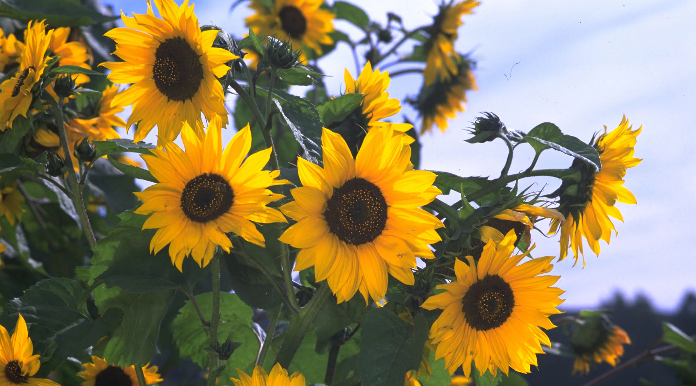

Sunflower is a tall, bright flowering plant known for its large yellow blooms that follow the sun. It is widely grown as an ornamental plant in gardens and fields. Sunflowers are popular for decoration, photography, and attracting pollinators like bees.
Needs full sunlight (6–8 hours daily) for strong growth and large blooms.
Water regularly, especially during early growth. Keep soil moist but not soggy.
Best growth at 20°C – 30°C. Prefers warm and sunny climates.
Use well-draining, fertile soil with organic matter.
Flowers bloom within 70–100 days after planting depending on variety.
Used for decoration, landscaping, photography, and attracting pollinators
Cause: High humidity and poor airflow.
Solution: Improve ventilation and remove affected leaves.
Cause: Overwatering or poor drainage.
Solution: Reduce watering and improve soil drainage.
Cause: Insect infestation.
Solution: Use natural pest control or remove manually.
Cause: Lack of sunlight or nutrients.
Solution: Provide full sunlight and fertilizer.
Cause: Insufficient light or nutrients.
Solution: Improve sunlight exposure and soil quality.